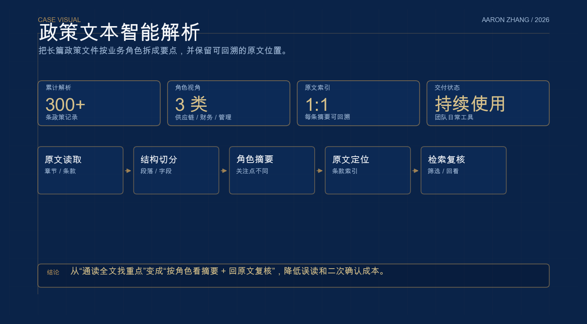

政策文本智能解析
把长篇、非结构化的政策文件，按不同业务角色自动归纳要点，并索引回原文位置，变成可检索的结构化信息。
| 公司 |
本特勒投资（中国）有限公司 |
| 时间 |
2026.07 – 至今 |
| 角色 |
供应链数字化实习生 · 开发 / 交付 |
| 关键词 |
Python 文本解析 结构化字段 角色化摘要 |
背景 / Context
政策文件通常篇幅长、结构不统一，同一份文件对不同业务角色的影响也不同：供应链关心交付和通关，财务关心成本和合规，管理层关心方向和风险。
原来的做法是人工通读、摘录、转发，存在三个问题：
- 找得慢：关键条款埋在大段文字里，检索成本高。
- 口径不一：不同人摘出来的重点不一样。
- 无法追溯：摘要和原文对不上，难以复核。
我的工作 / What I did
我开发了一个政策文件解析工具，把「原文 → 结构化 → 可检索」串起来：
- 文本解析：读取政策文件，按章节、条款、段落切分。
- 角色化摘要：针对不同业务角色，生成不同关注点的要点归纳。
- 原文定位：为每条摘要保留原文位置索引，点击可以回到出处。
- 结构化存储：把政策主题、适用对象、关键条款、时间节点等字段抽出来，形成可筛选的记录。
- 持续使用：工具交付给团队日常使用，累计解析记录 300+ 条。
结果 / Impact
- 累计解析 300+ 条政策记录，工具被团队持续使用。
- 把「通读全文找重点」变成「按角色看摘要 + 回原文复核」。
- 每条摘要可追溯，降低误读和二次确认成本。
关键数据 / Key Numbers
| 指标 |
数值 |
口径 |
| 累计解析 |
300+ 条 |
政策记录 |
| 角色视角 |
3 类 |
供应链 / 财务 / 管理层 |
| 原文索引 |
1:1 |
每条摘要保留原文位置 |
| 交付状态 |
持续使用 |
团队日常检索 |

图：原文读取、结构切分、角色化摘要、原文定位到检索复核的流程。
结论 / Takeaways
- 同一份政策，对不同角色不是同一件事：供应链看交付和通关，财务看成本和合规，管理层看方向和风险；角色化摘要比“一份通用摘要”更有用。
- 摘要必须能回到原文：没有原文索引的摘要不敢用于业务判断；可追溯性是这类工具能不能被真正使用的分界线。
- 先设计字段，再设计解析：主题、适用对象、关键条款、时间节点这些字段决定了后续能不能筛选和复核。
可迁移的能力 / What it shows
- 信息架构：先定义字段和检索方式，再决定怎么解析。
- 可追溯设计：摘要必须能回到原文，才敢用于业务判断。
- 角色化思维：同一份信息，对不同使用者要有不同的呈现方式。
说明：该项目为实习期间内部项目。以上仅展示问题拆解、方法和个人贡献，不包含公司数据、系统截图或源代码；部分细节已做脱敏和概括处理。